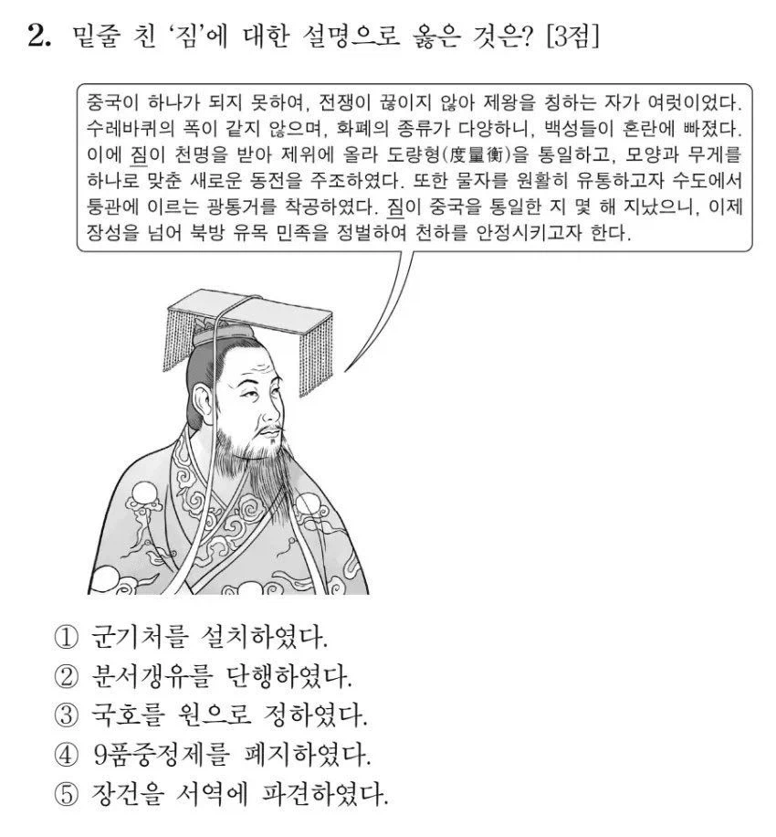
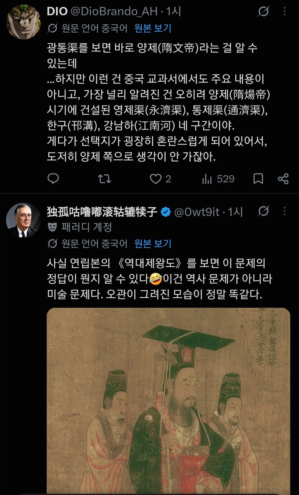
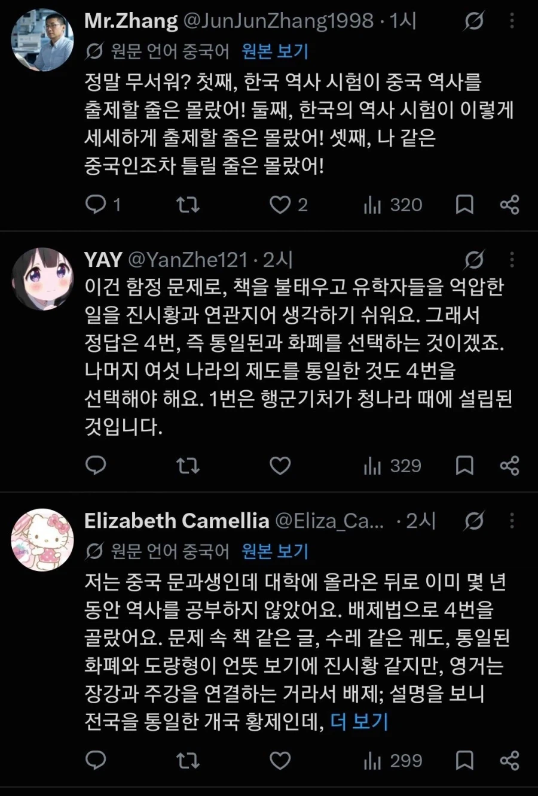

중국인들도 독하다 독해 하는중



중국인들도 독하다 독해 하는중
한무제인줄
와 그림 그대로 가져다놓은게 ㄹㅇ 킥이네 ㅋㅋㅋㅋㅋ
근데 진시황제 구글링하면 복장 똑같은 이미지 나옴. 얼굴만 양제로 바꿔놈. 삽화도 꼬았음
진시황은 옷 무늬까지 똑같은 그림 있어
중국도 입시교육 빡셀건데 쟤네도 혀내두르는거 보니 수능이 지나치게 독한듯
짱.꺠들 시험은 주관식이 많긴한데 대신 문제가 많아서 달달 못 외우면 시간이 부족해서 다 못 푸는 경우도 많음 ㅋㅋㅋ공산국가 특징이 정해진 답만 외우고 니가 해석하고 생각할 답은 안주는게 특징임 ㅋㅋㅋㅋ
아 약간 예전 한국 문제은행 식이구나... 난 당연히 인구가 많으니까 문제도 어려울 줄 알았는데. 사고할 문제를 안 준다니 놀라운걸
그리고 짱.깨 시험 특징이 우리처럼 답안지가 없음, 직접 답을 써넣어야하고 선택지가 들어간 문제도 별로 없음, 수학 시험 같은 경우는 풀이식 문제의 경우 시험지 한장에 문제가 2개에서 4개밖에 없는데 풀이 과정을 다 넣어야 하지 최종 답만 딱 넣어놓으면 인정이 안됨, 이게 시간을 많이 잡아먹어서 다른 문제를 풀다가 막히면 다 패스하고 끝까지 풀고 다시 못푼걸 풀어야 하는데 시간이 존나 딸림, 상위 1퍼 대학은 인국 1억 넘는 지역에도 200명 남짓밖에 못들어감, 베이징,칭화 같은데는 합격율이 제일 높은 지역 합격율이 0.7퍼밖에 안되는데 합격율이 낮은데는 0.05퍼대로 들어가는 지역도 있음 ㅋㅋㅋㅋ우리로치면 경기도에서 서울대 들어가면 경기도청에서 축하를 해주고 그 지역 시장이 교통경비 지원해주고 지역 뉴스에 누구누가 서울대에 들어갔다고 뉴스에 나올 정도임 ㅋㅋㅋㅋ
나도 그냥 진시황이라고 생각했을듯
쟤네도 지들이랑 하등 상관없는 남의나라 역사를 왜이렇게까지하지? 싶을듯 ㅋㅋ
세계사
본국사람도 속는 문제를...
마 이게 한국의 킬러문제라고 하는거다
독하다 독해 ㅋㅋㅌ
도량형 통일은 시황제 아닌가?했는데
그래 독해를 잘하라고
그림의 인물은 수 문제 이다.
1번 - 청 옹정제
2번 - 진 시황제 (그림과 도량형 통일 어쩌고에서 보통 대부분 이걸 골랐을 거임. 광통거는 수 문제)
3번 - 원 세조
4번 - 수 문제 정답
5번 - 한 무제
저따구 지엽적인 함정문제 내는게뭔의미인가
통일하고 몇해가 지났으니... 진은 통일하고 금방 망해서 아닐거라고 생각했는데...
15년 걸림
이제 수능에서 세계사, 동아시아는 없으니 이런 지엽적인 역사 문제도 안나올듯 한국사는 절대평가라 엄청 쉽고 통합사회는 역사 문제 거의 없을테니
출제자가 마지막 세계사 문제이라는 심정으로 출제한듯
광통거를 착공 하였다. 안봤으면 2번 선택할뻔했음 ㅎㄷㄷ
도량형 나오길래 진시황 생각했는데 장성을 넘어간다니까 아닌것 같았음
조조